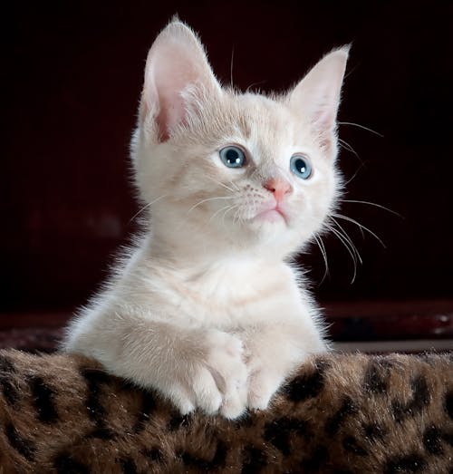
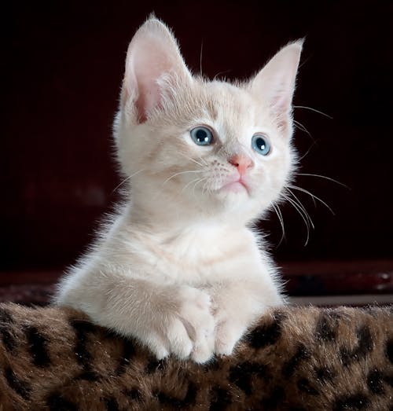

Cat Photos
Click here to view more cat photos cat photos
Cat Lists
Things cats love
- cat nip
- laser pointers
- lasagna

Things cats hate
- flea tratment
- thunder
- other cats

Click here to view more cat photos cat photos
Things cats love
Things cats hate